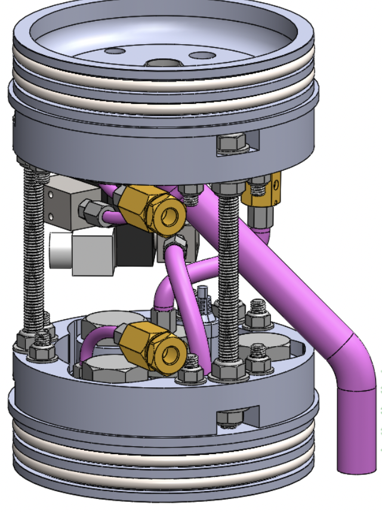
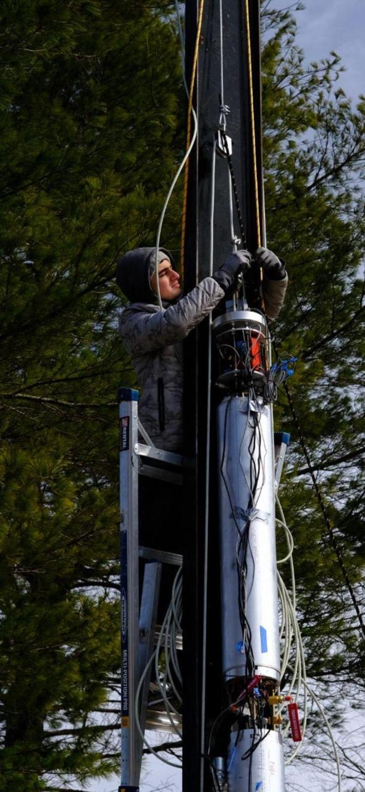
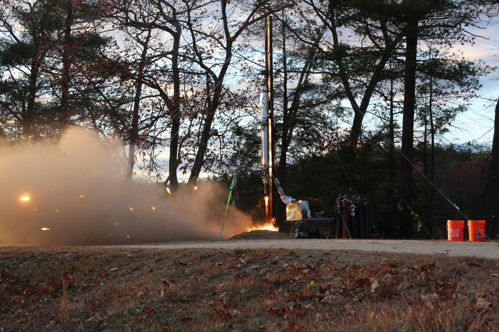
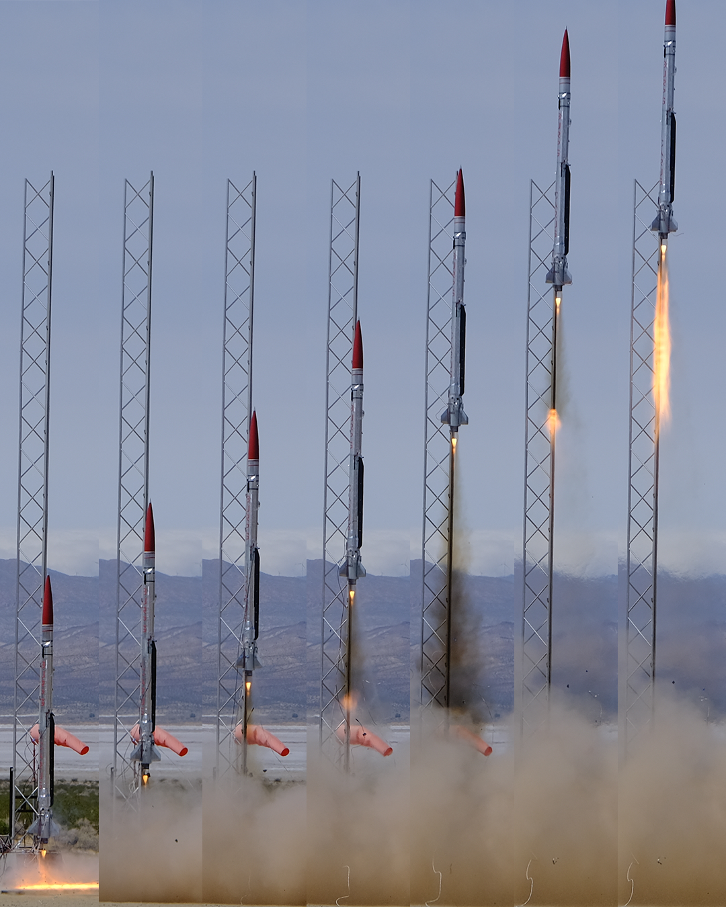

BURPG Work
A showcase of my contributions to the Boston University Rocket Propulsion Group over several years.
1. Structures Engineer
Designed the inter-tank structure, a connecting assembly between the fuel and oxidizer tanks, engineered to withstand propulsion compression loads during rocket acceleration. This assembly also houses all critical electronics and fluid system components, including valves, pipes, vents, dump, and fill systems.

Manufacturing and Assembly: Machined raw stock materials into structural components, designed and fabricated an inter-tank fuselage that enables easy installation.


2. Test Engineer
Worked on Cold Flow and Hot Fire test campaigns in Massachusetts, contributing to the development of the vertical test stand used for static testing of the flight vehicle propulsion system. Operated the stand, managed the fluid system, checked for leaks, and ensured the safety of all hardware.


Milestones: Successful hot fire on November 2, 2024, validating flight readiness.

Successful Launch: March 29, 2025, California.
